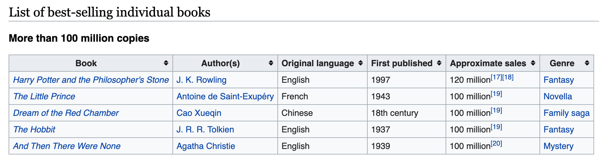

I was watching one of the Harry Potter films for the umpteenth time, wondering how such a mediocre film went on to be such huge box office hit. The answer is obvious, the books were hugely popular, and there are hundreds of millions of loyal fans who would watch the film regardless of the quality. It led me to ask, in general though, will a popular book always do well when converted to a film? What is the relationship like between books sales and box office success and which films are the exceptions? To what extent can I use book sales as a predictor of box office success?
First things first, lets collect some data. We need information on book sales and gross movie sales.
library(tidyverse)
library(rvest)Wikipedia often has great tables with this type of information. I’ll be using this wiki page.

I want to use all this book sales data for my analysis, however, there are over 300 rows, its far too much to copy out manually, or even copy and paste. This is a great opportunity to try out rvest, R’s webscraping package.
book_wiki_page <- "https://en.wikipedia.org/wiki/List_of_best-selling_books#List_of_best-selling_individual_books"
book_html <- xml2::read_html(book_wiki_page)It’s hard to get very far in webscraping without at least a very basic understanding of the languages which determines how things are styled and laid out on a webpag, HTML and CSS.
This code tells the computer where to look in the webpage to get the table data we’re looking for.
all_tables <- book_html %>%
html_nodes(css = "table.wikitable.sortable" ) We now have a list, containing all the tables on the webpage, we want to turn all these individual tables into nice dataframes, and then combine all those 15 dataframes in to a master dataframe with all the information in it.
This is a perfect use case for functional programming using purrr.
parse_table <- function(x) {
html_table(x,fill=T) %>%
as_tibble() %>%
mutate(across( everything(), as.character ) )
}
combined_table <- map_dfr(all_tables,parse_table)Here I use map_dfr to apply parse_table to each tables in the list and sticks all the output together.
As is often the case with scraped data, this is far from clean. We have a No. of installments and a No. of instalments column. Lets merge them into one.
combined_table <- combined_table %>%
mutate(`No. of installments` = coalesce(`No. of installments`,`No. of instalments`)) %>%
select(-`No. of instalments`)The Approximate sales is very messy, and it the column we are most concerned about, to lets take care to make sure we extract all the data.
clean_approximate_sales_col <- function(df) {
df %>%
mutate(
`Approximate sales_clean` = str_remove(`Approximate sales`, '(\\[\\d+\\])+'),
`Approximate sales_numb` = str_extract(`Approximate sales`, '[\\d,\\.]+'),
`Approximate sales_multiplier` = if_else(str_detect(`Approximate sales`, 'million'),
10 ** 6, 1),
`Approximate sales_numb` = str_remove_all(`Approximate sales_numb`, ','),
`Approximate sales_numb` = as.double(`Approximate sales_numb`),
`Approximate sales_dbl` = `Approximate sales_numb` * `Approximate sales_multiplier`
) %>%
select(
-`Approximate sales_clean`,
-`Approximate sales_numb`,
-`Approximate sales_multiplier`
)
}
combined_table <- combined_table %>%clean_approximate_sales_col()Now we’ve cleaned our master tables, some are series, some are individual books.
book_series_table <- combined_table %>%
filter(!is.na(`Book series`)) %>%
select(-Book) %>% select( `Book series`,everything())
book_table <- combined_table %>%
filter(!is.na(Book)) %>%
select(-`Book series`,-`No. of installments`)One last cleanup on the books table
This is our books table
book_series_table %>% head(n = 3) %>% knitr::kable()| Book series | Author(s) | Original language | First published | Approximate sales | Genre | No. of installments | Approximate sales_dbl |
|---|---|---|---|---|---|---|---|
| Harry Potter | J. K. Rowling | English | 1997–present | 500 million[8][175] | NA | 7 + spin offs | 5.0e+08 |
| Goosebumps | R. L. Stine | English | 1992–present | 350 million[176] | NA | 62 + spin-off series | 3.5e+08 |
| Perry Mason | Erle Stanley Gardner | English | 1933–1973 | 300 million[177] | NA | 82 + 4 short stories | 3.0e+08 |
This is our series table
book_series_table %>% head(n = 3) %>% knitr::kable()| Book series | Author(s) | Original language | First published | Approximate sales | Genre | No. of installments | Approximate sales_dbl |
|---|---|---|---|---|---|---|---|
| Harry Potter | J. K. Rowling | English | 1997–present | 500 million[8][175] | NA | 7 + spin offs | 5.0e+08 |
| Goosebumps | R. L. Stine | English | 1992–present | 350 million[176] | NA | 62 + spin-off series | 3.5e+08 |
| Perry Mason | Erle Stanley Gardner | English | 1933–1973 | 300 million[177] | NA | 82 + 4 short stories | 3.0e+08 |
I followed a similar process to get data for the top grossing films. In a future blog post, i’ll analyse this scraped data to look at the relationship between book sales and performance at the box office.